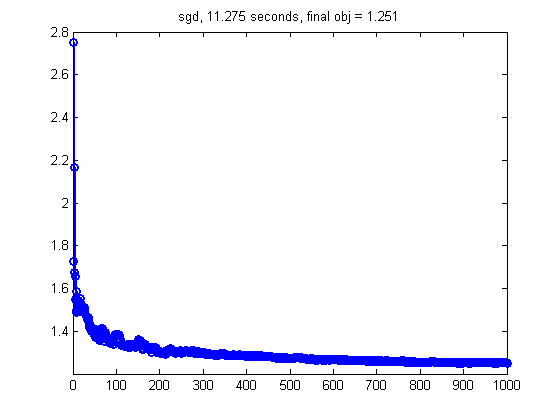
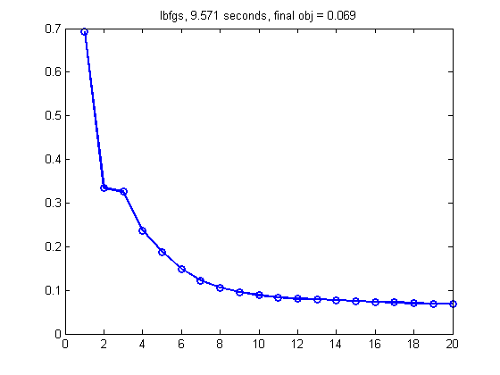

Stochastic gradient descent for logistic regression problem
setSeed(0);
Ntrain = [];
[Xtrain, ytrain, Xtest, ytest] = mnistLoad([2 3], Ntrain);
rep = 1;
Xtrain = repmat(Xtrain, rep, 1);
ytrain = repmat(ytrain, rep, 1);
ytrain = setSupport(ytrain, [-1 +1]);
ytest = setSupport(ytest, [-1 +1]);
[N,D] = size(Xtrain)
winit = zeros(D,1);
lambda = 1e-9;
funObjXy = @(w,X,y) penalizedL2(w, @(ww) LogisticLossScaled(ww, X, y), lambda);
funObj = @(w) funObjXy(w, Xtrain, ytrain);
options = [];
options.derivativeCheck = 'off';
options.display = 'none';
options.maxIter = 100;
options.maxFunEvals = 100;
options.TolFun = 1e-3;
options.TolX = 1e-3;
sgdoptions.batchsize = 100;
sgdoptions.verbose = true;
sgdoptions.storeParamTrace = true;
sgdoptions.storeFvalTrace = false;
sgdoptions.maxUpdates = 1000;
sgdoptions.avgstart = 5;
sgdoptions.method = [];
sgdoptions.lambda = 1;
methods = {'sgd', 'lbfgs'};
for m=1:length(methods)
method = methods{m}
tic
switch method
case 'sgd'
sgdoptions.method = 'sgd';
[w, f, exitflag, output{m}] = stochgrad(funObjXy, winit, sgdoptions, Xtrain, ytrain);
case 'sgdmf'
sgdoptions.method = 'minfunc';
[w, f, exitflag, output{m}] = stochgradComplex(funObjXy, winit, sgdoptions, Xtrain, ytrain);
otherwise
options.Method = method;
[w, f, exitflag, output{m}] = minFunc(funObj, winit, options);
fvalTrace = output{m}.trace.fval;
end
t = toc;
finalObj = funObjXy(w, Xtrain, ytrain);
if strcmpi(method, 'sgd') || strcmpi(method, 'sgdmf')
fprintf('postprocessing\n');
[fvalTrace] = stochgradTracePostprocess(output{m}.trace, funObjXy, Xtrain, ytrain);
end
figure;
plot(fvalTrace, 'o-', 'linewidth', 2);
title(sprintf('%s, %5.3f seconds, final obj = %5.3f', ...
method, t, finalObj));
printPmtkFigure(sprintf('logregOpt%s', method))
if 0
figure; plot(output{m}.trace.fvalMinibatch); title('minibatch')
figure; plot(output{m}.trace.fvalMinibatchAvg); title('minibatch avg')
end
end
N =
12089
D =
784
method =
sgd
5 batches of size 100
epoch 1
epoch 2
5 batches of size 100
epoch 1
epoch 2
5 batches of size 100
epoch 1
epoch 2
121 batches of size 100
epoch 1
epoch 1 batch 100 nupdates 100
epoch 2
epoch 2 batch 100 nupdates 221
epoch 3
epoch 3 batch 100 nupdates 342
epoch 4
epoch 4 batch 100 nupdates 463
epoch 5
epoch 5 batch 100 nupdates 584
epoch 6
epoch 6 batch 100 nupdates 705
epoch 7
epoch 7 batch 100 nupdates 826
epoch 8
epoch 8 batch 100 nupdates 947
epoch 9
postprocessing
method =
lbfgs
 